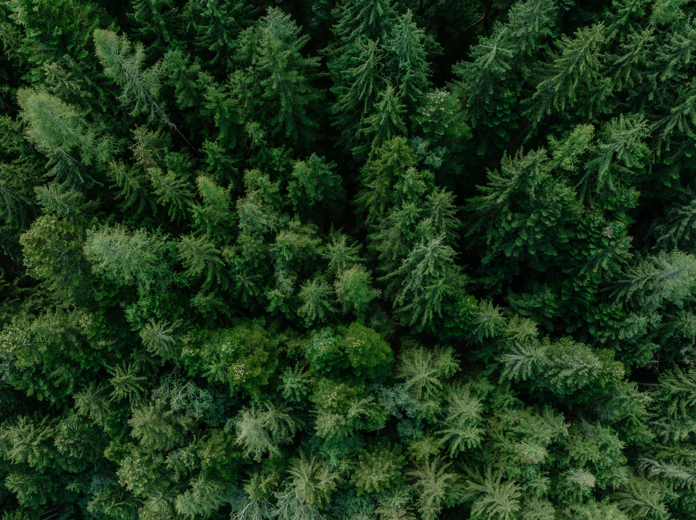

Photo by Patrick Langwallner on Unsplash
The purpose of this club is to teach students and individuals on how to take care of plants, foods and all things outside in the environment. This is a key club to help build independence in taking care of ourseleves and our planet and that teaches us valuable lessons. Enviro Club is all about learning to care and nurture plants and thhings we can grow. It teaches us about how to ethically take care of plants and how we can contribute in helping our environment better as a small step up.